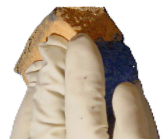

LABORATORIO DI ARTE E IMMAGINE
Piccoli restauratori
Una missione speciale: fai riemergere i colori dell'affresco di Michelangelo.

🖌️ La Creazione di Adamo
Trascina la spugna sull'affresco annerito. Passa più volte per togliere la patina, proprio come in un gioco di restauro.

Avanzamento della pulitura0%
Usa il dito, la penna LIM o il mouse.
Michelangelo, Creazione di Adamo, Cappella Sistina. Immagine di pubblico dominio. Attività di pulitura simulata: non rappresenta una tecnica da applicare realmente a questo affresco.
🧠 Tre domande per il timbro
Rispondi alle domande: dopo ogni scelta scoprirai la spiegazione corretta.